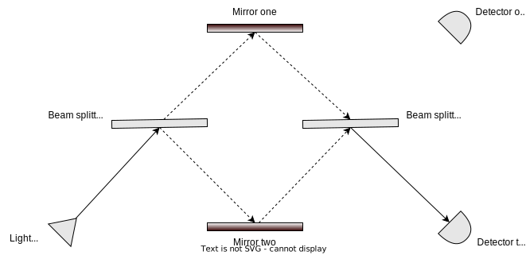
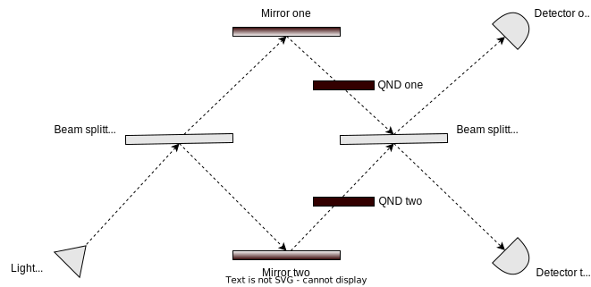

Quantum Mechanics
Waves can interfere with each other constructively or destructively.

Mach-Zehnder interferometer.
Mach-Zehnder interferometer with QNDs.
Quantum Computing
Deutsch's problem - given an unknown function
$f : \{0,1\} \rightarrow \{0,1\}$
determine if the function is constant or balanced
- $f_0$ is constant
- $f_1$ is constant
- $f_2$ is balanced
- $f_3$ is balanced
- $f_0(0) = f_0(1) = 0$
- $f_1(0) = f_1(1) = 1$
- $f_2(0) = 0 \;\;\; f_2(1) = 1$
- $f_3(0) = 1 \;\;\; f_3(1) = 0$
Classically, two function evaluations are needed.
After the first execution, we still cannot say if the function is balanced or constant.